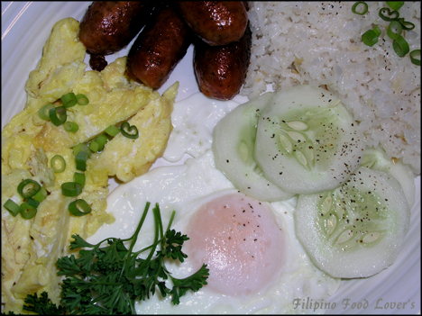
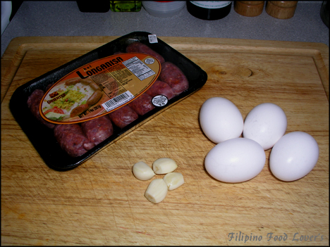
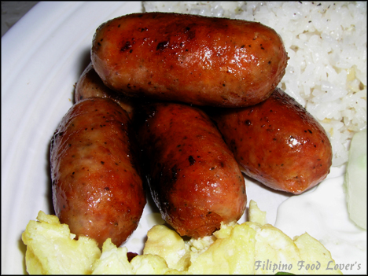
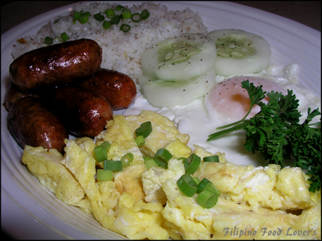
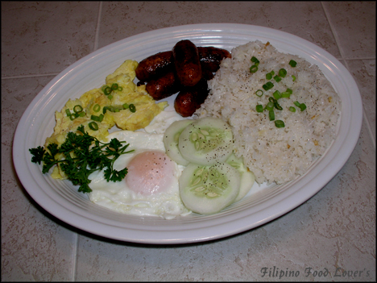

Longsilog or Silogs
Longsilog or Silogs are definitely a very popular Filipino breakfast. They come in many combinations and are all mouth-watering breakfast
delights. You can find these dishes at street vendors all over the Philippines.

They are commonly called Turo-Turo Eatery’s (it means pick and point eatery). This recipe is for Longsilog. It’s a combination of Longanisa,
(Filipino sausage) eggs, and garlic-fried rice. Sometimes it also comes with fresh slices of tomato and onions.
The three most commonly seen silogs are:
- Tapsilog having tapa as the meat ingredient
- Tocilog having tocino as the meat ingredient
- Longsilog having longanisa as a meat ingredient
Other silogs sometimes seen:
- Hotsilog, with a hot dog
- Bangsilog, with bangus (milkfish)
- Dangsilog, with danggit (rabbitfish)
- Spamsilog, with spam
- Adosilog, with adobo
- Chosilog, with chorizo
- Chiksilog, with chicken
- Cornsilog, with canned corned beef
- Litsilog, with lechon
Ingredients:
- 4 Cups of left over rice from the previous night
- 5 Links of longanisa sausage
- 1 Cup of water for cooking longanisa
- 3 Eggs
- 2 Cloves of garlic
- ½ Tbs. Salt
- ¼ Tbs. Ground black pepper
- ¼ Tbs. MSG
- Oil for frying
Directions:
- The Longanisa Sausage in a frying pan add water and oil and bring to a boil.
- Let the water totally evaporate and wait for the oil to extract from the sausage links.
- Let it fry for about 5 minutes rolling the sausage links constantly to cook evenly.
The Eggs:
- Beat two eggs as you would normally make an omelet.
- Season them with salt, cook in a frying pan, remove, and set aside.
- Next get a third egg and cook it sunny side up.
- Remove and set aside.
The Garlic-Fried Rice:
- Break up the rice smoothly and set aside.
- Heat frying pan, add oil, and saute garlic until golden brown.
- Next add rice and stir for 1 minute.
- Then add salt & pepper and msg to taste and let it cook for an additional 5 minutes.
- Stir the rice constantly to avoid scorching.
- Add more salt if needed.
The Plating:
- In a platter arrange the longanisa, eggs, and fried rice and garnish with freshly sliced tomatoes and onions or slices of cucumber
(Pipino).
- Then ask yourself this, When was the last time you had a breakfast this good! Enjoy your breakfast.



